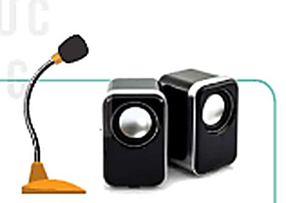
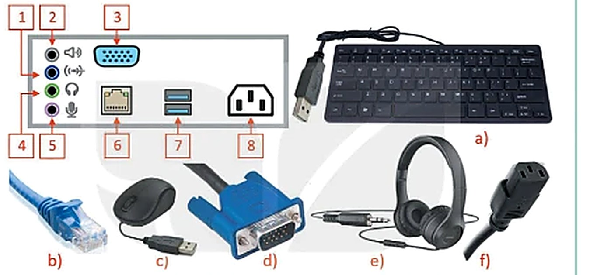

Dành cho giáo viên
Theo dõi lớp
| Học sinh / Nhóm | Đã nộp | Cập nhật |
|---|
Bước 1
1 Khởi động
Khám phá Hình ảnh khởi động
Trò chuyện Cùng An, Minh và Khoa
Đoạn trò chuyện gợi mở (không có trong SGK)
An: Tớ gõ bàn phím, chữ hiện lên màn hình; bấm in, giấy chạy ra từ máy in.
Minh: Bàn phím đưa thông tin vào máy tính, còn máy in đưa kết quả ra.
Khoa: Thế còn micro, loa, máy quét… thì sao nhỉ? Mình cùng xếp loại nhé!
Minh: Bàn phím đưa thông tin vào máy tính, còn máy in đưa kết quả ra.
Khoa: Thế còn micro, loa, máy quét… thì sao nhỉ? Mình cùng xếp loại nhé!
Khởi động Nhớ lại kiến thức lớp 6
Ghi bài Khởi động
Sau khi thầy cô chốt, em chép nội dung dưới đây vào vở.
Bước 2 · Hình thành kiến thức mới
2.1 Thiết bị vào – ra
Hoạt động 1 Thiết bị vào – ra
Quan sát Hình 1.1 và trả lời các câu hỏi.

Hoạt động 2 Sự đa dạng của thiết bị vào – ra
Quan sát Hình 1.2 và Hình 1.3, sau đó trả lời các câu hỏi.


Thảo luận nhóm Xếp thiết bị vào đúng nhóm
Mỗi bạn tự chọn trước 4 thiết bị, sau đó cả nhóm thống nhất. Thiết bị nào nhóm còn tranh luận thì chọn ? để trình bày trước lớp. Câu hỏi gợi ý: thông tin đi vào máy tính hay đi ra khỏi máy tính?
Đọc hiểu Thiết bị vào – ra còn lưu trữ, xử lí dữ liệu
Đọc SGK trang 7 về loa thông minh và máy ghi hình kĩ thuật số, quan sát Hình 1.4.
Câu hỏi SGK trang 7
Ghi bài 1. Thiết bị vào – ra
Sau khi thầy cô chốt, em chép nội dung dưới đây vào vở.
Bước 2 · Hình thành kiến thức mới
2.2 An toàn thiết bị
Hoạt động 3 Kết nối thiết bị vào – ra
Một máy tính để bàn có các cổng kết nối như Hình 1.5.

Thảo luận nhóm Nên làm hay không nên làm?
Câu hỏi SGK trang 9
Ghi bài 2. Sử dụng thiết bị an toàn
Sau khi thầy cô chốt, em chép nội dung dưới đây vào vở.
Bước 3
3 Luyện tập
Gắn nhãn Ôn lại kiến thức bằng hình
Luyện tập Bài tập SGK trang 9
Ghi bài Luyện tập
Sau khi thầy cô chốt, em chép nội dung dưới đây vào vở.
Bước 4
4 Vận dụng
Vận dụng Liên hệ thực tế
Ghi bài Vận dụng
Sau khi thầy cô chốt, em chép nội dung dưới đây vào vở.